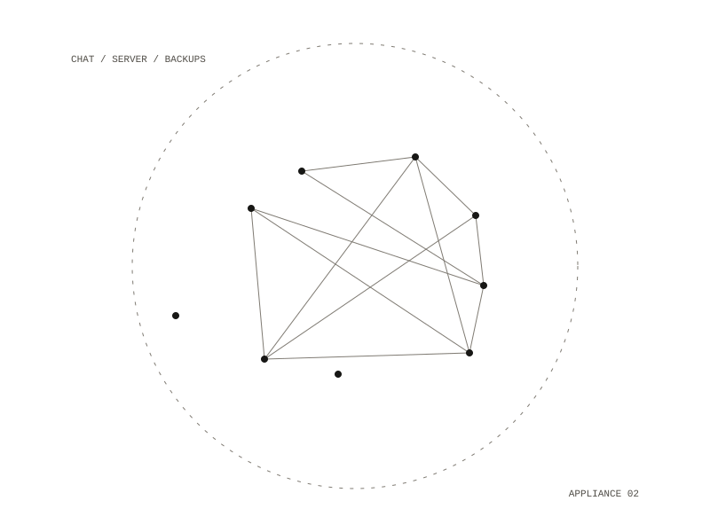

Mattermost Stack
A self-hosted Mattermost chat server with a Postgres database, in two forms: a throwaway local server on loopback for development, and a production server behind a reverse proxy with automatic HTTPS. The two stacks share no state and no network, and the local one is never used in production. They are kept as two separate files, not a base plus an override, so a development default cannot be inherited into production by forgetting to override it.

One way in
In production the proxy is the only container that publishes a port; the chat server and the database are reachable only over the internal Docker network, and the firewall allows only SSH, HTTP and HTTPS. The proxy terminates TLS, caps request bodies at 60 MB, and replaces the forwarded-for header instead of appending to it, so a client cannot write a false address into the audit log or the rate-limit bucket. Security settings such as rate limiting, password policy and open registration are set in the compose file, where they can be reviewed in git, instead of in the admin console.
Edition and versions
The free Team Edition is pinned to an extended support release. The other free option keeps multi-factor login but caps visible history at 10,000 messages; the stack takes Team Edition because a silent message cap is permanent, while missing multi-factor login is a bounded risk covered by invite-only access, rate limiting and a strict password policy. A compose pull picks up patch releases within the pinned version but never crosses to the next one on its own; moving between support releases is done by hand, one at a time, with a backup first.
State and backups
The architecture notes list each Docker volume, what it holds and what losing it costs. The backup script covers the two whose loss cannot be recovered, the database and uploaded files, runs nightly from cron, and prunes old backups only after the new one is verified. A guided restore script takes a snapshot before restoring. The notes say that backups kept on the same server protect against mistakes, not against losing the server, and that copies must go off the box.
Limits
There is no high availability: one server, one of each container. The written limits are about 50 users on a 4 GB server before memory becomes the pressure, 250 users for Team Edition, and disk space for uploads, which nothing prunes.
Docker on one virtual server, with a reverse proxy and automatic HTTPS
local and production stacks, a security review, a deploy runbook, backup and restore scripts